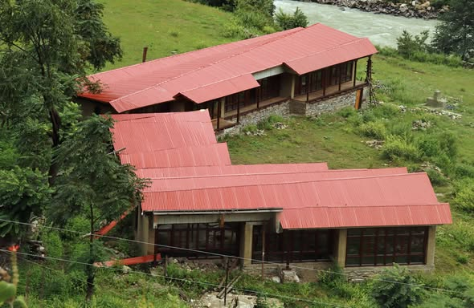
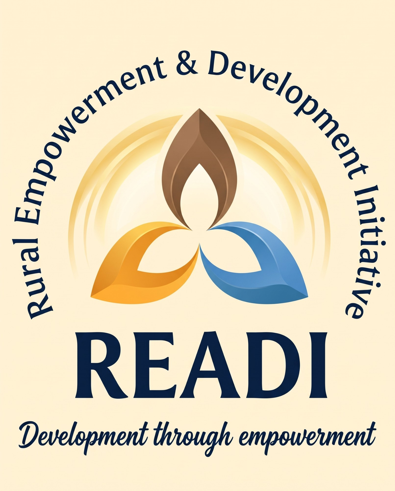
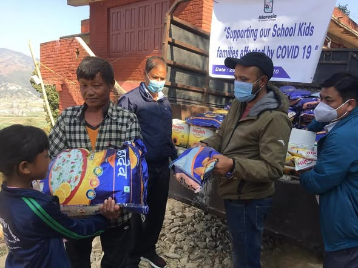

Six areas of work, one goal: children and families in Karnali who can shape their own future.

A permanent home in Simikot for up to 30 children, with shelter, meals and school.
Visit the home
Books, food, lodging and tuition for children who would otherwise leave school. Humla's first library opened in 2010.
Learn more.jpg)
Treating child malnutrition with DHO Humla, training health workers, and emergency health equipment.
Learn more
Fast help after disasters: the 2015 and 2023 earthquakes, and COVID-19 lockdowns.
Learn more
Stays of 2 to 6 weeks teaching and living with host families in Simikot or Changunarayan.
Volunteer with usLivelihoods that stay in Humla, like the Humla Delights café, which supported the children's home.
Learn moreSimikot and surrounding villages. Our home district: the children's home, education and nutrition.
Karnali Province · since 2008Shree Krishna School, Changunarayan: school lunches, the volunteer program and COVID relief.
Bagmati ProvinceWinter relief after the November 2023 earthquake.
Karnali Province · 2023Relief after the 2015 Gorkha earthquake.
Bagmati Province · 2015Relief after the 2015 earthquake.
Bagmati Province · 2015Relief after the 2015 earthquake.
Gandaki Province · 2015
Teach at a local school, live with a host family and see rural Nepal from the inside. We also run a 21-day summer group program with partners in Spain.
Fees and how to apply still need to be confirmed To confirm
Volunteer detailsGifts to "where it's needed most" let us respond quickly, whether that's a new term or a new emergency.
Donate now